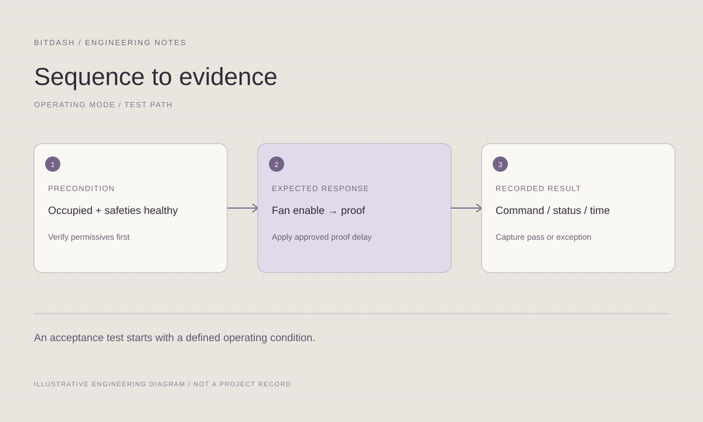

Normal operation
Occupancy, startup, temperature control, ventilation, staging and orderly shutdown for the agreed equipment.
 S O L U T I O N SLet’s talk ↗
S O L U T I O N SLet’s talk ↗Clear operating modes, interlocks and acceptance criteria before programming begins.
Discuss your project ↗
Occupancy, startup, temperature control, ventilation, staging and orderly shutdown for the agreed equipment.
Temperature, pressure and plant reset strategies with stated inputs, limits, timing and interaction between systems.
Equipment failure, loss of proof, communication faults and restart behavior, coordinated with approved safety interfaces.
An approved control narrative that programming and functional testing can use as their common reference.
View supported platforms ↗Occupied, unoccupied, warm-up, cooldown, standby, and other project-specific modes with explicit entry and exit conditions.
Fan and pump enable logic, heating and cooling control, damper operation, lead/lag selection, staging, and equipment coordination.
Project-specific temperature, static-pressure, and differential-pressure reset narratives tied to approved design requirements.
Enable permissives, failure responses, loss-of-communication behavior, freeze-protection interfaces, and restart requirements.
Setpoint schedules, adjustable limits, alarm delays, priorities, deadbands, and clear operator-facing descriptions.
A reviewable relationship between the sequence, programmed logic, and functional tests, including applicable owner or project standards.
A useful sequence describes what starts an action, what holds it in place and what ends it. We structure the narrative so programmers, reviewers and testing teams can trace the same operating intent.

Define entry and exit conditions for each operating mode, including priority when conditions overlap. Identify adjustable setpoints and which values are fixed by the approved design.
Describe enables, delays, minimum run times, deadbands and staging conditions where applicable. Record limits and dependencies rather than leaving them to interpretation during programming.
Pair the narrative with observable results. The testing team should know the starting condition, the action to take, the expected response and the evidence to retain.
Mechanical design intent and operating requirements
Equipment manufacturer requirements and control interfaces
Existing sequences, owner standards, and review responsibilities
File formats, review rounds and final acceptance responsibilities are defined with your team at the start.
Translate the sequence into software ↗Translate agreed behavior into Niagara station logic and supervisory strategies while identifying which functions belong in field controllers.
Final scope follows the installed version, licensing and approved access.Define the operating condition, trigger, expected response, limits and recovery. Connect each requirement to a functional-test step so the programmer and test team use the same approved intent.
Yes. Review the current narrative with the mechanical design and equipment interfaces, identify ambiguous modes or exceptions, and issue the agreed clarifications through the project review process.